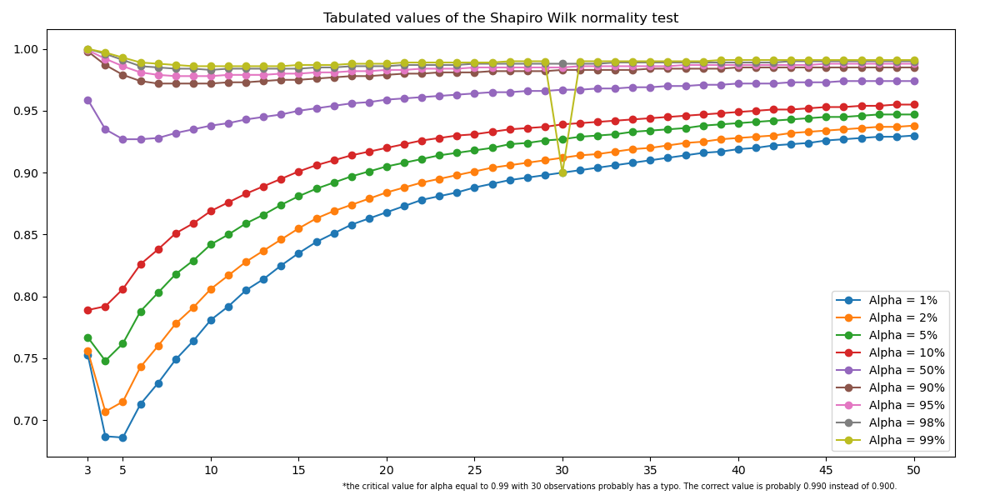

Shapiro Wilk Normality Test#
- class cup_of_coffee.functions.distributions.ShapiroWilkNormalityTest(alfa=None, language=None, n_digits=None, **kwargs)[source]#
This class instantiates an object to perform the Shapiro Wilk Normality test.
- Attributes
- alfafloat
The level of significance.
- languagestr
The language code used for the interface.
- msgstr
The test result expressed in text.
- n_digitsint
The number of digits that are displayed.
- p_valuefloat
The estimated p-value for the data set.
- statisticfloat
The calculated value of the test statistic.
- tabulatedfloat
The tabulated value for the pair (number of observations and level of significance).
- x_expnp.ndarray
The experimental data where the test was applied.
Methods
shapiro_wilk(x_exp, alfa=None, n_digits=None, conclusion=None, details=None)
Performs the Shapiro Wilk test.
shapiro_wilk_to_csv(file_name=None, sep=”,”)
Exports the results to a pre-formatted csv file.
shapiro_wilk_to_xlsx(file_name=None, sheet_names=None)
Exports the results to a pre-formatted xlsx file.
get_shapiro_wilk_tabulated_value(n_rep, alfa=None)
Finds the tabulated value for a pair of alpha and number of observations
draw_shapiro_wilk_tabulated_values(show=True)
Draws a plot with the tabulated data.
- draw_shapiro_wilk_tabulated_values(show=True)[source]#
Draw a plot with the Shapiro-Wilk tabulated data.
- Parameters
- showbool (default True)
Whether or not to display the graph with the tabulated values.
- Returns
- axmatplotlib.axes._subplots.AxesSubplot
The axis of the graph. This parameter is only valid if show = False.
- tabulateddict
The tabulated data used to draw the graph.
Notes
The Shapiro Wilk tabulated data can be found at BRATLEY et al [1].
References
- 1
BRATLEY, P.; FOX, B. L.; SCHRAGE, L. E. A Guide to Simulation. 1. ed. New York: Springer, 1983 (Appendix A).
Examples
Ploting the Shapiro Wilk tabulated values
>>> from easy_stat.functions.distributions import ShapiroWilkNormalityTest >>> shapiro_wilk = ShapiroWilkNormalityTest() >>> shapiro_wilk.draw_shapiro_wilk_tabulated_values()
Saving the Shapiro Wilk tabulated values
>>> from easy_stat.functions.distributions import ShapiroWilkNormalityTest >>> import matplotlib.pyplot as plt >>> shapiro_wilk = ShapiroWilkNormalityTest() >>> shapiro_wilk.draw_shapiro_wilk_tabulated_values(show=False) >>> plt.savefig("shapiro_wilk.png")
Getting the data used to draw the graph
>>> from easy_stat.functions.distributions import ShapiroWilkNormalityTest >>> import matplotlib.pyplot as plt >>> shapiro_wilk = ShapiroWilkNormalityTest() >>> axes, table = shapiro_wilk.draw_shapiro_wilk_tabulated_values(show=False) >>> print(table.keys()) dict_keys(['n_rep', 0.01, 0.02, 0.05, 0.1, 0.5, 0.9, 0.95, 0.98, 0.99, 'Note'])
- get_shapiro_wilk_tabulated_value(n_rep, alfa=None)[source]#
This function gets the tabulated value of the Shapiro Wilk test.
- Parameters
- alfafloat (default = 0.05)
The significance level.
- n_repint
The total number of observations.
- Returns
- tabulatedfloat or None.
The tabulated value for the requested confidence level.
Notes
The tabulated value is returned only if the number of observations is at least
3(n_rep >= 3).If the number of repetitions is higher than
50(n_rep > 50), the function returns the tabulated value for50(n_rep = 50) observations.- This function has tabulated values for the following confidence levels [1]:
99% (ɑ = 0.01);
98% (ɑ = 0.02);
95% (ɑ = 0.05);
90% (ɑ = 0.10);
50% (ɑ = 0.50);
The function returns None for other confidence levels.
References
- 1
BRATLEY, P.; FOX, B. L.; SCHRAGE, L. E. A Guide to Simulation. 1. ed. New York: Springer, 1983 (Appendix A).
Examples
Getting tabulated value for 5% of significance and 5 observations
>>> from easy_stat.functions.distributions import ShapiroWilkNormalityTest >>> shapiro_wilk = ShapiroWilkNormalityTest() >>> tabulated_value = shapiro_wilk.get_shapiro_wilk_tabulated_value(n_rep=5) >>> print(tabulated_value) ShapiroWilkResult(tabulate=0.762, alpha=0.05)
Getting tabulated value for 1% of significance and 10 observations
>>> from easy_stat.functions.distributions import ShapiroWilkNormalityTest >>> shapiro_wilk = ShapiroWilkNormalityTest() >>> tabulated_value = shapiro_wilk.get_shapiro_wilk_tabulated_value(n_rep=10, alfa=0.01) >>> print(tabulated_value) ShapiroWilkResult(tabulate=0.781, alpha=0.01)
- shapiro_wilk(x_exp, alfa=None, n_digits=None, conclusion=None, details=None)[source]#
This function is just a wraper around scipy.stats.shapiro() [1] to perform the Shapiro Wilk normality test, but with some improvements.
- Parameters
- xnumpy array
One dimension numpy array with at least 3 sample data.
- alfafloat, optional
The level of significance (ɑ). Default is
Nonewhich results in0.05.- n_digitsint, optional
The maximum number of decimal places be shown. Default is
Nonewhich results in4decimal places.- conclusionstr, optional
This parameter determines how to perform the comparison test to perform the Normality test. If
conclusion = 'tabulate'(orNone, e.g, the default), the comparison test is made between the tabulated value (with ɑ significance level) and the calculated value of the test statistic. If'p_value', the comparison test is performed between the p-value and the adopted significance level (ɑ). Both results should lead to the same conclusion.- detailsstring, optional
The
'details'parameter determines the amount of information presented about the hypothesis test. If'details' = 'short'(orNone, e.g, the default), a simplified version of the test result is returned. If'details' = 'full', a detailed version of the hypothesis test result is returned.
- Returns
- statisticfloat
The test statistic.
- tabulatedfloat or None
The tabulated value for alpha equal to
1%,2%,5%,10%or50%. Other values will returnNone.- p_valuefloat
The p-value for the hypothesis test.
- conclusionstr
The test conclusion (e.g, normal/ not normal).
See also
anderson_darlingPerforms the Anderson-Darling normality test (not implemented yet)
kolmogorov_smirnovPerforms the Kolmogorov-Smirnov normality test (not implemented yet)
liliefforsPerforms the Lilieffors normality test (not implemented yet)
Notes
The tabulated values [2] include samples with sizes between
3and50, for ɑ equal to1%,2%,5%,10%or50%. For data with a sample size higher than50, the tabulated value returned is the value for50samples.The parameter
conclusionuses the hypothesis test for normality test as follows:☕
H0: data comes from normal distribution.
H1: data does not come from normal distribution.
By default (
conclusion='tabulate'), the conclusion is based on the comparison between the tabulated value (at ɑ significance level) and statistic of the test:☕
- if tabulated <= statistic:
Data is Normal
- else:
Data is not Normal
The other option (
conclusion='p_value') makes the conclusion comparing the p-value with ɑ:☕
- if p-value >= ɑ:
Data is Normal
- else:
Data is not Normal
Note that, if ɑ is not
1%,2%,5%,10%or50%, the conclusion will always be performed using the p-value.The
n_digitsparameter does not influence any calculation, it just truncates the number of decimal places returned for thestatistic,tabulatedandp_valueparameters.References
- 1
https://docs.scipy.org/doc/scipy/reference/generated/scipy.stats.shapiro.html
- 2
BRATLEY, P.; FOX, B. L.; SCHRAGE, L. E. A Guide to Simulation. 1. ed. New York: Springer, 1983 (Appendix A).
Examples
>>> from easy_stat.functions.distributions import ShapiroWilkNormalityTest >>> import numpy as np >>> import scipy.stats as stats >>> x = stats.norm.rvs(loc=5, scale=3, size=100, random_state=42) >>> normality_shapiro_wilk = ShapiroWilkNormalityTest() >>> results, conclusion = normality_shapiro_wilk.shapiro_wilk(x) >>> print(results) ShapiroWilkResult(Statistic=0.9898, Tabulated=0.947, p_value=0.6551, Alpha=0.05) >>> print(conclusion) Data is Normal at a 95.0% of confidence level.
>>> from easy_stat.functions.distributions import ShapiroWilkNormalityTest >>> import numpy as np >>> import scipy.stats as stats >>> x = np.array([1.90642, 2.22488, 2.10288, 1.69742, 1.52229, 3.15435, 2.61826, 1.98492, 1.42738, 1.99568]) >>> normality_shapiro_wilk = ShapiroWilkNormalityTest() >>> results, conclusion = normality_shapiro_wilk.shapiro_wilk(x) >>> print(results) ShapiroWilkResult(Statistic=0.9266,Tabulated=0.781, p_value=0.4161, Alpha=0.05) >>> print(conclusion) Data is Normal at a 99.0% of confidence level.
>>> from easy_stat.functions.distributions import ShapiroWilkNormalityTest >>> import numpy as np >>> import scipy.stats as stats >>> x = np.array([5.1, 4.9, 4.7, 4.6, 5.0, 5.4, 4.6, 5.0, 4.4, 4.9]) >>> normality_shapiro_wilk = ShapiroWilkNormalityTest() >>> results, conclusion = normality_shapiro_wilk.shapiro_wilk(x, alfa=0.10, details="full") >>> print(results) ShapiroWilkResult(Statistic=0.9698, Tabulated=0.869, p_value=0.889, Alpha=0.1) >>> print(conclusion) Since the tabulated value (0.869) <= statistic (0.9698), we have NO evidence to reject the hypothesis of data normality, according to the Shapiro-Wilk test at a 90.0% of confidence level.
>>> from easy_stat.functions.distributions import ShapiroWilkNormalityTest >>> import numpy as np >>> import scipy.stats as stats >>> x = np.array([5.1, 4.9, 4.7, 4.6, 5.0, 5.4, 4.6, 5.0, 4.4, 4.9]) >>> normality_shapiro_wilk = ShapiroWilkNormalityTest() >>> results, conclusion = normality_shapiro_wilk.shapiro_wilk(x, conclusion="p_value", details="full") >>> print(results) ShapiroWilkResult(Statistic=0.9698, Tabulated=0.842, p_value=0.889, Alpha=0.05) >>> print(conclusion) Since p-value (0.889) >= alpha (0.05), we have NO evidence to reject the hypothesis of data normality, according to the Shapiro-Wilk test at a 95.0% of confidence level.
>>> from easy_stat.functions.distributions import ShapiroWilkNormalityTest >>> import numpy as np >>> import scipy.stats as stats >>> x = np.array([1,1.2,1.6,1.8, 2, 2.2, 3, 5, 7, 7.2, 8.2, 8.4, 8.6, 9]) >>> normality_shapiro_wilk = ShapiroWilkNormalityTest() >>> results, conclusion = normality_shapiro_wilk.shapiro_wilk(x, details="full") >>> print(results) ShapiroWilkResult(Statistic=0.8413, Tabulated=0.874, p_value=0.0169, Alpha=0.05) >>> print(conclusion) Since the tabulated value (0.874) > statistic (0.8413), we HAVE evidence to reject the hypothesis of data normality, according to the Shapiro-Wilk test at a 95.0% of confidence level.
- shapiro_wilk_to_csv(file_name=None, sep=',')[source]#
Export the data to csv file This function is just a wraper around pd.DataFrame.to_csv [1] to export
.csvfiles.- Parameters
- file_namestr, optional
The name of the file to be exported, without its extension (default is
None, which results in a file named'shapiro_wilk.csv')- sepstr of length 1, optional
Field delimiter for the output file (default is
None, which uses the comma (',')). This is thesepparameter of thepd.DataFrame.to_csv()pandas method.
- Returns
- df
pd.DataFrame A DataFrame containing the data used to export the
csvfile.
- df
Notes
The
shapiro_wilk()method needs to be applied beforehand.If there is a file with the same name passed through the
file_nameparameter in the current directory, the file will be exported with a different name.References
Examples
>>> from easy_stat.functions.distributions import ShapiroWilkNormalityTest >>> import numpy as np >>> my_data = np.array([5.1, 4.9, 4.7, 4.6, 5.0, 5.4, 4.6, 5.0, 4.4, 4.9]) >>> normality_shapiro_wilk = ShapiroWilkNormalityTest() >>> normality_shapiro_wilk.shapiro_wilk(my_data) >>> normality_shapiro_wilk.shapiro_wilk_to_csv() >>> ^^^^^^^^^^^^^^^^^^^^^^^^^^^^^^^^^^^^ The 'shapiro_wilk.csv' was exported! ^^^^^^^^^^^^^^^^^^^^^^^^^^^^^^^^^^^^
Download the exported file by
clicking here.>>> from easy_stat.functions.distributions import ShapiroWilkNormalityTest >>> import numpy as np >>> my_data = np.array([5.1, 4.9, 4.7, 4.6, 5.0, 5.4, 4.6, 5.0, 4.4, 4.9]) >>> normality_shapiro_wilk = ShapiroWilkNormalityTest(language='pt-br') >>> normality_shapiro_wilk.shapiro_wilk(my_data) >>> normality_shapiro_wilk.shapiro_wilk_to_csv(file_name="my_data", sep=';') >>> ^^^^^^^^^^^^^^^^^^^^^^^^^^^^^^^^^^^^^^^ O arquivo 'my_data.csv' foi exportado! ^^^^^^^^^^^^^^^^^^^^^^^^^^^^^^^^^^^^^^^
Download the exported file by
clicking here.
- shapiro_wilk_to_xlsx(file_name=None, sheet_names=None)[source]#
This method exports the data to excel type files. This function is just a wraper around pd.DataFrame.to_excel [1] to export
.xlsxfiles.- Parameters
- file_namestr, optional
The name of the file to be exported, without its extension (default is
Nonewhich results in a file name'shapiro_wilk.xlsx').- sheet_nameslist of two strings, optional
A list containing the name of the worksheets where the data will be saved:
The first element corresponds to the name of the worksheet where the calculated data will be saved (default is
Nonewhich means'shapiro_wilk').The second element corresponds to the name of the worksheet where the supplied data will be saved (default is
Nonewhich means'data').
- Returns
- df_listA list of two pandas DataFrame
The first element is a
pd.DataFramewith the Shapiro Wilk calculated data. The second element is apd.DataFramewith the supplied data.
Notes
The
shapiro_wilk()method needs to be applied beforehand.If a spreadsheet with the same name already exists in the current directory and this files contains tabs with conflicting names, the new tabs will be inserted into the file with different names, preserving the original data.
References
Examples
>>> from easy_stat.functions.distributions import ShapiroWilkNormalityTest >>> import numpy as np >>> my_data = np.array([5.1, 4.9, 4.7, 4.6, 5.0, 5.4, 4.6, 5.0, 4.4, 4.9]) >>> normality_shapiro_wilk = ShapiroWilkNormalityTest() >>> normality_shapiro_wilk.shapiro_wilk(my_data) >>> normality_shapiro_wilk.shapiro_wilk_to_xlsx() >>> ^^^^^^^^^^^^^^^^^^^^^^^^^^^^^^^^^^^^^^^^^^^^^^^^^^^^ The data has been exported to file shapiro_wilk.xlsx ^^^^^^^^^^^^^^^^^^^^^^^^^^^^^^^^^^^^^^^^^^^^^^^^^^^^
Download the exported file by
clicking here.>>> from easy_stat.functions.distributions import ShapiroWilkNormalityTest >>> import numpy as np >>> my_data = np.array([5.1, 4.9, 4.7, 4.6, 5.0, 5.4, 4.6, 5.0, 4.4, 4.9]) >>> normality_shapiro_wilk = ShapiroWilkNormalityTest(language='pt-br') >>> normality_shapiro_wilk.shapiro_wilk(my_data) >>> normality_shapiro_wilk.shapiro_wilk_to_xlsx(file_name="my_data") >>> ^^^^^^^^^^^^^^^^^^^^^^^^^^^^^^^^^^^^^^^^^^^^^^^^^^^^^ Os dados foram exportados para o arquivo my_data.xlsx ^^^^^^^^^^^^^^^^^^^^^^^^^^^^^^^^^^^^^^^^^^^^^^^^^^^^^
Download the exported file by
clicking here.>>> from easy_stat.functions.distributions import ShapiroWilkNormalityTest >>> import numpy as np >>> my_data = np.array([5.1, 4.9, 4.7, 4.6, 5.0, 5.4, 4.6, 5.0, 4.4, 4.9]) >>> normality_shapiro_wilk = ShapiroWilkNormalityTest() >>> normality_shapiro_wilk.shapiro_wilk(my_data) >>> normality_shapiro_wilk.shapiro_wilk_to_xlsx(file_name="my_new_data", sheet_names=["my_test", "my_data"]) >>> ^^^^^^^^^^^^^^^^^^^^^^^^^^^^^^^^^^^^^^^^^^^^^^^^^^^ The data has been exported to file my_new_data.xlsx ^^^^^^^^^^^^^^^^^^^^^^^^^^^^^^^^^^^^^^^^^^^^^^^^^^^
Download the exported file by
clicking here.